품질경영기사 (2015-09-19 기출문제)
1과목: 실험계획법
1. 일반적으로 변량인자들에 대한 실험계획으로 많이 사용되며, 다음과 같은 데이터의 구조식을 갖는 실험계획법은? (단, i = 1, 2, … , l, j = 1, 2, … , m, k = 1, 2, … , n, p = 1, 2, … , r이다.)
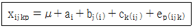
- 단일분할법
- 지분실험법
- 이단분할법
- 삼단분할법
(정답률: 84%)

2. 반복수가 다른 1 원배치법의 데이터가 다음과 같은 때, 총변동(ST)은 약 얼마인가?
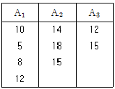
- 126.9
- 332.1
- 543.1
- 847.5
(정답률: 81%)
3. 다음은 22요인실험의 결과표이다. 인자 A, B의 교호작용(A×B)의 효과는?
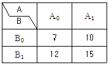
- 0
- 1
- 2
- 3
(정답률: 87%)
4. Lg(34)형 직교배열표의 4열에 들어가는 기본표시는?
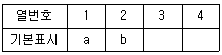
- a
- ab
- ab2
- a2b2
(정답률: 62%)
5. 요인배치법에서 실험순서가 랜덤하게 정해지지 않고, 실험 전체를 몇 단계로 나누어서 단계별로 랜덤화하는 실험계획법은?
- 교락법
- 일부실시법
- 분할법
- 라틴방격법
(정답률: 77%)
6. 수준이 5 인 1 원배치법에서 반복수가 6인 경우, 아래의 분산분석표에서 F0값은 약 얼마인가?
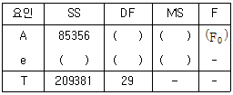
- 3.85
- 4.00
- 4.15
- 4.30
(정답률: 76%)
7. 실험계획에서 필요한 요인에 대한 정보를 얻기 위하여 2 인자 이상의 무의미한 고차의 교호작용의 효과는 희생시켜 실험의 횟수를 적게 하도록 고안된 실험계획법은?
- 난괴법
- 요인배치법
- 분할법
- 일부실시법
(정답률: 67%)
8. 인자수가 3개(A, B, C)인 반복이 있는 3 원배치 실험에 관한 다음과 같은 분산분석표에 있어서 요인 A×B의 제곱평균의 비 F0는 약 얼마인가? (단, A, B 인자는 모수이고, C인자는 변량이다.)
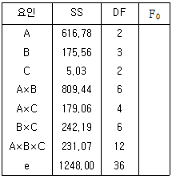
- 3.01
- 3.44
- 3.89
- 7.01
(정답률: 33%)
9. 반복이 있는 2 원 배치법에서 인자 A, B의 수준수와 반복이 각각 l = 4, m = 3, r = 2일 경우 교호작용의 자유도(vA×B)는?
- 6
- 12
- 15
- 17
(정답률: 72%)
10. 인자 A가 4 수준이고, 인자 B가 2 수준이면 교호작용 A×B는 2수준계 직교배열표에 몇 개의 열에 배치되는가?
- 1
- 2
- 3
- 4
(정답률: 66%)
11. 반복 없는 5×5 라틴방격법에 의하여 실험을 행하고 분산분석한 후 A2B4C3조합에 대한 모평균 구간추정을 하기 위한 유효 반복수는 얼마인가?
- 16/15
- 19/17
- 35/20
- 25/13
(정답률: 77%)
12. 난괴법 실험(A : 모수인자, B : 변량인자)에서 다음의 분산분석표가 얻어졌다. 인자 B의 분산 추정값
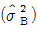
은 약 얼마인가?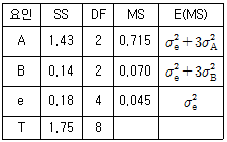
- 0.0083
- 0.0140
- 0.0250
- 0.2233
(정답률: 76%)
13. 표와 같이 계수치 데이터가 얻어졌다. 총변동의 (ST)값은? (단, Xij = 0은 적합품, Xij = 1은 부적합품이다.)
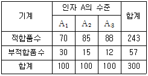
- 15.20
- 22.81
- 24.51
- 46.17
(정답률: 75%)
14. 표본 자료를 회귀직선에 적합시킨 경우, 적합성의 정도를 판단하는 방법이 아닌 것은?
- 분산분석을 하여 판단한다.
- 결정계수(r2)를 구하여 판단한다.
- 추정 회귀식이 절편을 구하여 판단한다.
- 오차의 추정치(MSe)를 구하여 판단한다.
(정답률: 62%)
15. A1, A2, A3에 관한 대비에서 L = C1A1 + C2A2 + C3A3변동(SL)은? (단,
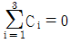
, Ci가 모두 0은 아니며, r은 인자 A의 각 수준에서의 반복수이다.)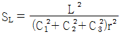
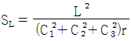
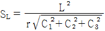
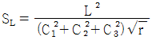
(정답률: 70%)
16. 실험계획법에서 사용되는 모형은 인자(Factor)의 종류에 따라 크게 3가지로 분류되는데, 이에 속하지 않는 것은?
- 모수모형
- 교차모형
- 변량모형
- 혼합모형
(정답률: 81%)
17. 1차단위 인자가 A인 1 원배치인 분할법의 경우에 F0를 구하는 식으로 올바른 것은? (단, A, B는 모수인자이며 수준수는 l, m이고, R은 변량인자이며 수준수는 r이다.)
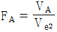
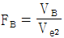
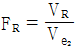
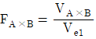
(정답률: 45%)
18. 망소특성을 갖는 제품에 대한 손실함수는? (단, L(y) : 손실함수, k : 상수, y : 품질특성치, m : 목표값이다.)
- L(y) = ky2
- L(y) = k(y-m)2
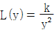
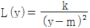
(정답률: 61%)
19. 모수인자 A, B의 수준이 각각 l과 m이고, 반복수가 r인 경우의 모형은 다음과 같다. 분산분석의 결과, 교호작용이 무시될 수 없다면, A인자의 i번째 수준과 B인자의 i번째 수준의 조합에서의 모평균에 대한 추정값은?
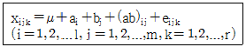
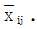
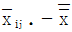
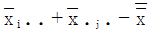
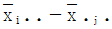
(정답률: 31%)
20. 교락법의 실험을 여러 번 반복하여도 어떤 반복에서나 동일한 요인효과가 블록효과와 교락되어 있는 경우의 교락실험 설계방법은?
- 부분교락
- 완전교락
- 단독교락
- 이중교락
(정답률: 74%)
2과목: 통계적품질관리
21. 평균값 400g 이하인 로트는 될 수 있는 한 합격시키고, 평균값 420g 이상인 경우 불합격 시키려고 한다. 과거의 경험으로 표준편차는 15g으로 조사되었다. 이때 α = 0.⑤, β = 0.1을 만족시키기 위한 시료의 크기(n)는 얼마인가? (단, Kα = 1.64, Kβ = 1.28이다.)
- 1개
- 3개
- 4개
- 5개
(정답률: 55%)
22. A업종에 종사하는 종업원의 임금 실태를 조사하기 위하여 시료의 크기 120명을 조사하였더니 평균 98.87만원, 표준편차 8.56만원이었다. 이들 종업원 전체 평균임금을 유의수준 1%로 추정하면 신뢰구간은 약 얼마인가? (단, u0.995 = 2.58, u0.99 = 2.33이다.)
- 96.66 만원 ~ 101.08 만원
- 96.85 만원 ~ 100.89 만원
- 97.10 만원 ~ 100.55 만원
- 97.45 만원 ~ 100.28 만원
(정답률: 74%)
23. 적합도 검정에 대한 설명 중 틀린 것은?
- 관측도수는 실제 조사하여 얻은 것이다.
- 일반적으로 기대도수는 관측도수보다 적다.
- 사용되는 확률변수는 이산형으로 x2분포를 이용한다.
- 모집단의 확률분포가 어떤 특정한 분포라고 보아도 좋은가를 조사하고 싶을 때 적용할 수 있다.
(정답률: 70%)
24. 관리도에 대한 설명 중 틀린 것은?
- 통계적 관리상태에 있는 공정에서는 항상 규격에 맞는 제품이 생산된다.
- 관리도에서는 일반적으로 시료의 크기를 크게 할수록 공정의 변동을 쉽게 찾을 수 있다.
- 품질의 변동이 우연원인 혹은 이상원인에 의한 것인가를 가려내기 위해 관리도를 사용한다.
- 공정의 산포가 우연원인에 의한 산포로만 구성된다면 E(X)±3D(X)를 벗어날 확률이 0.27%에 불과하다는 데 이론적 기초를 두고 있다.
(정답률: 64%)
25. 이동평균 관리도에서 만약 k시점에서 시료크기 n개의 표본이 추출되고 시료군의 평균을
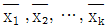
이라고 할 때 k시점에서 w개 시료군의 이동평균 관리도를 설명한 것 중 틀린 것은? 관리도와 함께 사용하면 더 효율적이다.
관리도와 함께 사용하면 더 효율적이다.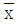
관리도와 같이 UCL과 LCL은 일정하다.- 일반적으로 w값이 클수록 민감도는 증가한다.
- 관리한계선을 벗어날 경우 공정이상으로 간주한다.
(정답률: 44%)
26. 통계량으로부터 모집단 추정은 모집단의 무엇을 알기 위한 것인가?
- 정수
- 통계량
- 모수
- 기각치
(정답률: 61%)
27. 어떤 공장에 입하한 볼트를 각 로트마다 5개의 시료로 샘플링하여 측정한 지름을 품질특성으로 할 대 적합한 관리도는?
- P 관리도
- nP 관리도
- C 관리도
 -R 관리도
-R 관리도
(정답률: 57%)
28. 어떤 직물의 물세탁에 의한 신축성 영향을 조사하기 위해 150 점을 골라 세탁 전(x), 세탁 후(y)의 길이를 측정한 결과가 S(xx) = 1072.5, S(yy) = 919.3, S(xy) = 607.6일 때, H0 : ρ = 0, H1 : ρ ≠ 0에 대한 검정통계량(t0)은?
- 9.412
- 9.446
- 11.953
- 11.993
(정답률: 37%)
29. 로트별 합격품질한계(AQL) 지표형 샘플링검사 (KS Q ISO 2859-1 :2014)에서 검사의 엄격도 전환규칙 중 전화스코어를 적용하여야 할 경우는?
- 수월한 검사에서 보통 검사로
- 보통 검사에서 수월한 검사로
- 보통 검사에서 까다로운 검사로
- 까다로운 검사에서 보통 검사로
(정답률: 71%)
30. 샘플링 검사의 OC 곡선에 관한 설명 중 틀린 것은? (단, n은 시료의 크기, c는 합격판정개수, N은 로크의 크기이다.)
- n 과 c 를 각각 2배씩 증가시키면 OC 곡선은 크게 변한다.
- n 과 N 이 일정하고 c 가 증가하면 OC 곡선은 기울기가 완만해진다.
- n 과 c 가 일정하고, N 이 어느 정도 이상 크면 OC 곡선은 완만해진다.
- N 과 c 가 일정할 때 n 이 증가하면 OC 곡선은 기울기가 급경사를 이룬다.
(정답률: 67%)
31. A = -2.1+0.2ncum, R = 1.7+0.2ncum인 계수치 축차 샘플링 검사방식(KS Q ISO 8422 : 2009)을 실시한 결과 6번째와 15번째, 20번째, 25 번째, 30번째, 35번째, 그리고 40번째에서 부적합품이 발견되었고, 44번 시료까지 판정 결과 검사가 속행되었다. 45번째 시료에서 검사결과가 적합품이라면 로트를 어떻게 처리해야 하는가? (단, 누계 샘플 중지값은 45개이다.)
- 검사를 속행한다.
- 생산자와 협의한다.
- 로트를 합격시킨다.
- 로트를 불합격시킨다.
(정답률: 36%)
32. 어떤 로트의 모부적합수는 m = 16.0 이었다. 작업내용을 개선한 후에 시료의 부적합수는 c =12.0 이 되었다. 검정통계량 (u0)은 얼마인가?
- -1.00
- 0.25
- 0.75
- 1.50
(정답률: 68%)
33. 중앙값 (Me) 관리도에 관한 설명으로 맞는 것은?
 관리도보다 검출력이 좋지 않다.
관리도보다 검출력이 좋지 않다.- 극단적인 이상치에 민감하게 반응한다.
- 시료의 크기는 계산 편의상 짝수개가 좋다.
- n = 5인 계량형 관리도를 작성할 때
 값보다 Me값의 계산이 일반적으로 더 어렵다.
값보다 Me값의 계산이 일반적으로 더 어렵다.
(정답률: 67%)
34. 어떤 회사의 사무실 출입은 엘리베이터에 의존하는데 오랫동안 조사해 본 결과, 내려오는 것은 2분에 1회 정도로 균등(uniform)분포를 따랐다. 어떤 사람이 12 시에서 12시 10분 사이에 엘리베이터에 도착하여 30초 이내로 타고 내려올 수 있는 확률은?
- 1%
- 5%
- 25%
- 50%
(정답률: 46%)
35. 계수형 샘플링 검사와 비교하여 계량형 샘플링 검사에 관한 설명으로 맞는 것은?
- 품질특성의 측정이 상대적으로 간편하다.
- 샘플링 검사기록이 앞으로의 품질문제 해석에 상대적으로 큰 도움이 되지 못한다.
- 한 가지 샘플링 검사만으로 제품의 모든 품질특성에 관한 판정을 내릴 수 있다.
- 검사를 위해 추출된 샘플에 부적합품이 포함되어 있지 않더라도 로트가 불합격될 수 있다.
(정답률: 70%)
36. 어떤 제품 1로트 중에 어떤 특성치의 모평균을 측정코자 한다. 랜덤으로 제품 1개를 샘플링 하였고, 그 제품을 3회 측정했을 때 데이터 3개의 평균치의 분산
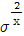
를 맞게 나타낸 식은? (단, 샘플 간의 분산 = σs2, 측정의 오차분산 = σ2M이다.)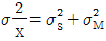
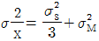
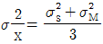
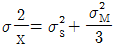
(정답률: 52%)
37. Y제조회사의 라인 1, 2에서 생산되는 품질특성에 대해 평균값의 차이를 추정하고자 10일 동안 품질특성을 측정하였더니 다음과 같았다. 2개 라인의 품질특성에 대한 모평균 차 μ1 - μ2에 대한 95% 신뢰구간을 구하면 약 얼마인가? (단, t0.975(18) = 2.101, t0.995(18) = 2.878이고, 두 모집단은 등분산이 성립되고 정규분포를 따르며 관리상태라고 가정한다.)
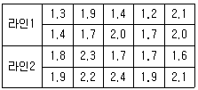
- -0.574 ~ 0.006
- -0.574 ~ -0.006
- -0.679 ~ 0.099
- -0.679 ~ -0.099
(정답률: 40%)
38. 정규분포 N(0,12)을 따르는 확률변수의 제곱은 어떠한 분포를 따르는가?
- x2분포
- 감마분포
- 지수분포
- 정규분포
(정답률: 57%)
39. 합리적인 군 구분이 안될 때 k = 25군이고,
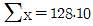
이고,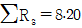
이다. 이 때 UCL 과 LCL 은 약 얼마인가?- UCL = 6.033, LCL = 4.215
- UCL = 6.133, LCL = 5.214
- UCL = 6.330, LCL = 4.521
- UCL = 7.240, LCL = 5.521
(정답률: 48%)
40. 어떤 제품의 품질 특성치는 평균 µ, 분산 σ2인 정규분포를 따른다. 20개의 제품을 표본으로 취하여 품질 특성치를 측정한 결과 평균 10, 표준편자 2를 얻었다. 분산 σ2에 대한 95% 신뢰구간은 약 얼마인가? (단, x20.975(19) = 32.852, x20.025(19) = 8.907이다.)
- 2.21 ~ 8.20
- 5.21 ~ 19.20
- 2.31 ~ 8.53
- 5.31 ~ 19.53
(정답률: 62%)
3과목: 생산시스템
41. 다음 괄호 안에 알맞은 용어는?
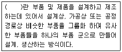
- GT
- FMS
- SLP
- QFD
(정답률: 84%)
42. 생산요소에 대한 유연성을 감안한 생산형식으로 특히 컴퓨터를 사용한 DNC 즉, 여러 대의 수치제어 기계와 자동컨베이어 시스템을 제어 컴퓨터에 연결하여 다양한 생산에 적합하게 설계된 시스템은?
- JIT
- DRP
- FMS
- CALS
(정답률: 53%)
43. 납기가 주어진 단일설비 일정계획에서 모든 작업을 납기 내에 완료할 수 없는 경우 평균흐름시간(average flow time)을 최소화하는 작업순위 규칙은?
- EDD(earliest due date)
- SPT(shortest processing time)
- FCFS(first come first serviced)
- PTS(predetermined time standard)
(정답률: 66%)
44. 다중활동분석표(multiple activity chart)를 사용하는 경우로 틀린 것은?
- 복수의 작업자가 조작업을 할 경우
- 한 명의 작업자가 1 대 또는 2 대 이상의 기계를 조작할 경우
- 복수의 작업자가 1 대 또는 2 대 이상의 기계를 조작할 경우
- 사이클(cycle) 시간이 길고 비 반복적인 작업을 개인이 수행하는 경우
(정답률: 78%)
45. 대상물을 손에서 놓는 동작으로, 대상물이 손에서 떠날 때부터 손 또는 손가락에서 완전히 떨어졌을 때까지를 의미하는 서어블럭 문자기호는?
- H(hold)
- RL(release load)
- TE(transport empty)
- TL(transport loaded)
(정답률: 67%)
46. 자재계획 수립 시 고려해야 할 사항으로 틀린 것은?
- 자재소요량과 발주량은 일치하지 않을 수 있다.
- 소요자재는 설계도에 의해 결정되고 설계변경 시에는 재료에 관한 정보를 변경해야 한다.
- 하위품목은 상위품목의 작업착수시기에 맞춰 납기를 정하고 조달기간을 고려하여 발주시기를 정한다.
- 외주생산품의 경우, 외주업체가 필요한 자재를 직접 구매 조달하더라도 반드시 자재계획을 세워야 한다.
(정답률: 70%)
47. 생산관리의 기본 기능을 크게 3 가지로 분류할 경우 해당하지 않는 것은?
- 실행기능
- 계획기능
- 통제기능
- 설계기능
(정답률: 46%)
48. A 기업은 4개의 작업을 2대의 기계(기계 1, 기계 2)로 순차적으로 처리하려고 한다. 4개 작업에 대한 가공시간의 추정치가 다음 표와 같은 때 가공시간과 유휴시간을 최소화하는 가공순서를 존슨규칙을 활용하여 나열한 것은?
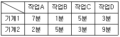
- A→C→D→B
- B→A→C→D
- B→D→C→A
- D→C→A→B
(정답률: 70%)
49. 다음 표는 정상상태로 추진되는 작업과 특급상태로 추진되는 작업의 기간과 비용을 나타내었다. 비용구배(cost slope)는?
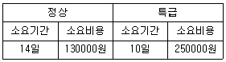
- 10000원
- 20000원
- 30000원
- 40000원
(정답률: 78%)
50. 포드시스템과 관련이 없는 것은?
- 과업관리
- 컨베이어
- 동시작업
- 고임금 저가격
(정답률: 70%)
51. 지수평할 모델을 위한 α값의 결정에 가장 적합한 것은?
- 수요증가의 속도가 빠를수록 낮게 설정한다.
- 일반적으로 0.01에서 0.3 사이의 값을 취한다.
- 과거의 자료를 무시하고 최근의 자료로 평가한다.
- α값이 클수록 과거 예측치의 가중치가 높아진다.
(정답률: 63%)
52. PERT 기법에서 여유(slack)는 각 단계의 상황에 따라 정여유(positive slack),영여유(zero slack), 부여유(negative slack)가 된다. 정여유란 어떤 상태를 의미하는가? (단, TE(earliest expected time), TL(latest allowable time)이다.)
- S=0
- TL＞TE
- TE=TL
- TL＜TE
(정답률: 47%)
53. ABC 재고분류에 대한 설명 중 맞는 것은?
- 주일정계획의 소요량에 따라 주문하는 것
- 제품을 창고에 ABC칸으로 나누어 보관하는 것
- 월별 또는 분기별 주문량을 기준으로 결정하는 것
- 품목의 가치나 중요도에 따라 재고를 분류하는 것
(정답률: 72%)
54. 다음에서 MRP(Material Requirements Planning)의 특징으로 옳은 것을 모두 선택한 것은?
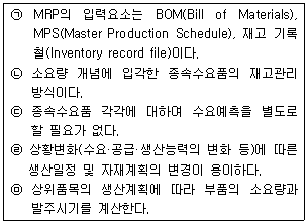
- ㉡, ㉢, ㉣, ㉤
- ㉠, ㉡, ㉢, ㉤
- ㉠, ㉡, ㉣, ㉤
- ㉠, ㉡, ㉢, ㉣, ㉤
(정답률: 72%)
55. 최적 제품조합(Product Mix)의 의미로 맞는 것은?
- 생산일정계획의 수립기법
- 총 이익을 최대화하는 제품들의 조합
- 각종 생산설비의 능력을 최대로 활용할 수 있는 생산능력의 조합
- 각종 수요예측을 통한 제품의 공정관리를 최적상태로 유지하기 위한 공정조합
(정답률: 52%)
56. JIT 생산방식에 관한 설명으로 틀린 것은?
- 생산의 평준화를 추구한다.
- 프로젝트 생산방식에 적합하다.
- 생산준비시간의 단축이 필요하다.
- 간판을 활용한 pull 생산방식이다.
(정답률: 66%)
57. 자재가 공정으로 들어오는 지점 및 공정에서 행하여지는 작업기호와 검사기호만을 사용하여 공정 전체를 파악하기 위한 공정분석도표는?
- 흐름공정도표(Flow Process Chart)
- 작업공정도표(Operation Process Chart)
- 다중활동분석표(Multiple Activity Chart)
- 작업자-기계작업분석표 (Man-Machine Chart)
(정답률: 60%)
58. 여유율을 정상시간(Normal Time)에 대한 여유시간(Allowance Time)의 비율로 정의하는 경우에 정상시간 10분, 여유율 20%인 작업의 표준시간은?
- 10분
- 11분
- 12분
- 13분
(정답률: 82%)
59. 설비종합효율을 관리함에 있어 품질을 안정적으로 유지하기 위해 초기제품을 검수하고 리셋(reset)하는 작업에 해당되는 손실은?
- 초기손실
- 고장정지손실
- 속도저하손실
- 일시정지·공운전손실
(정답률: 64%)
60. 설비보전의 조직 형태에서 집중보전(Central Maintenance)의 장점이 아닌 것은?
- 보전활동의 책임이 명확하다.
- 보전용 설비공구의 유효한 이용이 유리하다.
- 보전요원은 각 현장에 배치되어 있어 빠르게 작업할 수 있다.
- 분업/전문화가 진행되어 전문직으로서 고도의 기술을 갖게 된다.
(정답률: 58%)
4과목: 신뢰성관리
61. 시스템 신뢰도에 관한 설명 중 틀린 것은?
- 병렬구조의 신뢰도는 단일부품의 신뢰도보다 항상 높다.
- 직렬구조의 신뢰도는 단일부품의 신뢰도보다 항상 높다.
- 부품의 고장률 함수가 증가형인 직렬구조에서는 시스템의 고장률 함수도 증가형이다.
- 전환스위치 신뢰도를 고려하지 않을 경우 대기형(Stand-By)구조는 단일부품의 신뢰도보다 항상 높다.
(정답률: 79%)
62. 엔진 3개 중 2개가 작동하면 정상 작동하는 비행기가 있다. 이 비행기의 각 엔진의 고장률이 시간당 0.02일 경우 비행기의 신뢰도는 약 얼마인가?(오류 신고가 접수된 문제입니다. 반드시 정답과 해설을 확인하시기 바랍니다.)
- 0.9746
- 0.9845
- 0.9945
- 0.9999
(정답률: 15%)
63. 시스템의 고장확률밀도함수가 f(t)라고 할 때, 순간고장률 λ(t)은?
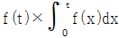
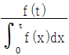
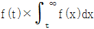
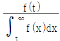
(정답률: 54%)
64. 설계에 대한 신뢰성 평가의 한 방법으로서 설계된 시스템이나 기기의 잠재적인 고장모드를 찾아내고 가동중인 시스템 등에 고장이 발생하였을 경우의 영향을 조사, 평가 하여 영향이 큰 고장모드에 대하여는 적절한 대책을 세워 고장의 발생을 미연에 방지하고자 하는 기법은?
- IFR
- DFR
- NBU
- FMEA
(정답률: 82%)
65. 여러 부품이 조합되어 만들어진 시스템이나 제품의 전체고장률이 시간에 관계없이 일정한 경우 적용되는 고장분포로 가장 적합한 것은?
- 균등분포
- 지수분포
- 정규분포
- 대수정규분포
(정답률: 69%)
66. 평균수명이 400시간 정도면 합격시키고 싶은 제품이 있다. 이 제품의 샘플을 10개의 시험장치에 걸어 고장난 것은 즉시 새것으로 교체하면서 160시간 시험하여 합부를 판정하고자 한다면 시험 중 고장횟수가 몇 회 이하이어야 합격되겠는가?
- 2회
- 3회
- 4회
- 5회
(정답률: 50%)
67. 고장시간 데이터가 와이블 분포를 따르는지 알아보기 위해 사용하는 와이블 확률지에 대한 설명 중 틀린 것은?
- 관측중단된 데이터는 사용할 수 없다.
- 고장분포가 지수분포일 때도 사용할 수 있다.
- 분포의 모수들을 확률지로부터 구할 수 있다.
- t를 고장시간, F(t)를 누적분포함수라고 할 때 In t와
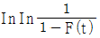
과의 직선관계를 이용한 것이다.
(정답률: 68%)
68. 그림의 FTA에서 정상사상의 고장확률은 약 얼마인가? (단, 기본사상의 고장확률은 0.1로 동일하다.)
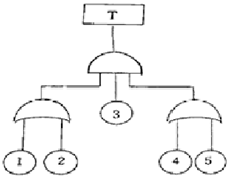
- 0.0036
- 0.0324
- 0.0987
- 0.8821
(정답률: 64%)
69. 샘플 50개에 대하여 수명시험을 하고 100시간 간격으로 고장개수를 조사한 결과가 다음 표와 같다. t = 300 시간에서의 신뢰도는 얼마인가?
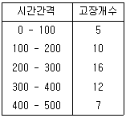
- 0.038
- 0.062
- 0.38
- 0.62
(정답률: 52%)
70. 대시료 실험에 있어서의 신뢰성 척도에 관한 설명으로 틀린 것은?
- 누적고장확률과 신뢰도 함수의 합은 어느 시점에서나 항상 동일하게 1로 나타난다.
- 어떤 시점 0에서 t까지 고장확률밀도함수를 적분하면 그 시점까지의 불신뢰도 F(t)를 알 수 있다.
- 어느 정도 시간이 경과하여 고장개수가 상당히 발생하였을 때, 그 시점에서 고장확률밀도함수는 고장률 함수보다 크거나 같다.
- 어떤 시점 t와 시간 (t + △t)사이에 발생한 고장개수를 시점 t에서의 생존개수로 나눈 뒤 이것을 △t로 나눈 것을 고장률 함수 λ(t)라 한다.
(정답률: 47%)
71. 냉장고의 고장 후 수리시간(T)은 Y = InT, μ = 1.48hr, σ = 0.37hr을 따르는 대수 정규분포를 한다고 알려져 있다. 이 때 본전도가 80%가 되는 시간(T)은 약 얼마인가? (단, u0.⑤ = 1.645, u0.10 = 1.282이다.)(오류 신고가 접수된 문제입니다. 반드시 정답과 해설을 확인하시기 바랍니다.)
- 7.06hr
- 7.82hr
- 8.06hr
- 8.82hr
(정답률: 31%)
72. n개의 부품이 병렬구조로 구성된 시스템이 있다. 각 부품의 신뢰도함수가 R0(t)일 때 시스템의 신뢰도함수 R(t)는?
- R(t) = R0(t)n
- R(t) = 1 - R0(t)
- R(t) = 1 - R0n
- R(t) = 1 - (1 - R0(t))n
(정답률: 74%)
73. 초기고장을 경감하기 위하여 아이템 사용 개시 전 또는 사용 개시 후의 초기에 동작시켜서 부적합을 검출하거나 제거하는 개선방법은?
- FTA
- 가속수명시험
- FMEA
- 디버깅(debugging)
(정답률: 75%)
74. 수리 가능한 시스템의 고장률이 0.0125/시간 이고 MTTR은 20시간일 때, 가용도는?
- 0.65
- 0.7
- 0.8
- 0.95
(정답률: 75%)
75. 신뢰성 관리에 관한 설명으로 틀린 것은?
- 설계시 보전성과 안전성을 고려하여 설계해야 한다.
- 사용신뢰성에는 수송 및 보관 등의 과정도 포함된다.
- 제품 설계단계에서 병렬결합모델보다는 직렬결합모델로 신뢰성을 향상시킨다.
- 고유신뢰성은 설계기술이 중요하고, 사용신뢰성을 고려하여 설계되어야 한다.
(정답률: 80%)
76. 강도는 평균 4000 psi, 표준편자 400 psi 인 정규분포를 따르고, 부하는 평균 3000 psi, 표준편자 300 psi인 정규분포를 따를 경우에 부품의 신뢰도는 얼마인가? (단, u0.8531 = 1.⑤, u0.9545 = 1.69, u0.9772 = 2.00, u0.9913 = 2.38이다.)
- 0.8531
- 0.9545
- 0.9772
- 0.9913
(정답률: 76%)
77. 고장확률밀도함수가 지수분포를 따르는 세탁기 3대를 97 시간 동안 시험했을 때, 고장이 한번도 발생하지 않았다면 평균수명의 하한값은? (단, 신뢰수준 = 90% 일 때의 MTBF 하한치 추정계수는 2.3이다.)
- 32.33 시간
- 42.17 시간
- 97.32 시간
- 126.52 시간
(정답률: 51%)
78. 리던던시 구조 중에서 구성품이 규정된 기능을 수행하고 있는 동안 고장날 때까지 예비로서 대기하고 있는 리던던시는?
- 활성리던던시
- 대기리던던시
- 직렬리던던시
- n 중 k 시스템
(정답률: 79%)
79. 가속계수가 12인 가속수준에서 총 시료 10개 중 5개 부품이 고장났을 때, 시험을 중단하여 다음의 데이터를 얻었다. 정상 사용조건에서의 평균수명은? (단, 이 부품의 수명은 가속수준과 상관없이 지수분포를 따른다.)
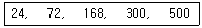
- 59.4 hr
- 356.4 hr
- 2553.6 hr
- 8553.6 hr
(정답률: 52%)
80. 5개의 타이어를 시험기에 걸어 마모실험을 한 결과 다음과 같은 수명데이터를 얻었다. 수명시간 320 시간에서의 중앙순위법(median rank)에 의한 F(ti)는 약 얼마인가? (단, 단위는 시간이다.)
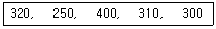
- 0.6667
- 0.6852
- 0.8000
- 0.8704
(정답률: 57%)
5과목: 품질경영
81. 6시그마 경영 효과에 대한 설명으로 가장 관계가 먼 것은?
- 품질이 향상되어 기업의 경쟁력이 강화된다.
- 고객만족을 위해서 획기적으로 부적합품률을 감소시킨다.
- 품질비용을 획기적으로 감소시켜 이익을 극대화 시킨다.
- 부적합품, 부적합을 근원적으로 제거하여 예방비용을 혁신적으로 감소시킨다.
(정답률: 31%)
82. 파이겐바움(Feigenbaum)이 분류한 품질관리부서의 하위 기능 부문 3가지에 해당되지 않는 것은?
- 원가관리 기술부문
- 품질관리 기술부문
- 공정관리 기술부문
- 품질정보 기술부문
(정답률: 56%)
83. 기업에서 계측목적에 의한 분류 중 관리를 목적으로 측정ㆍ평가하는 계측활동으로 가장 거리가 먼 것은?
- 환경조건에 관한 계측
- 생산능률에 관한 계측
- 시험ㆍ연구를 위한 계측
- 자재ㆍ에너지에 관한 계측
(정답률: 63%)
84. 계량단위, 제품의 용어, 기호 및 단위 등 기호적인 사항을 규정하는 규격은?
- 전달규격
- 방법규격
- 제품규격
- 인용규격
(정답률: 58%)
85. 다음은 제조물책임법 제1조 이다. 빈칸에 가장 적합한 표현은?
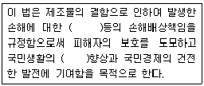
- 제조업자, 복지
- 제조업자, 안전
- 제조업자, 민생
- 구매업자, 복지
(정답률: 70%)
86. 품질관련 소집단활동 유형이 아닌 것은?
- 자율경영팀
- 품질프로젝트팀
- 품질위원회
- 품질분임조활동
(정답률: 68%)
87. A부서의 직접작업비는 500원/시간, 간접비는 800원/시간 이라고 한다. 손실시간이 30분인 경우, 이 부서의 실패비용은 약 얼마인가?
- 333원
- 533원
- 650원
- 867원
(정답률: 69%)
88. 품질경영 시스템-요구사항(KS Q ISO 9001 : 2009)에서 시정조치 사항에 규정할 내용으로 틀린 것은?
- 부적합의 검토
- 구매정보의 기록
- 부적합 원인의 결정
- 취해진 시정조치의 효과성에 대한 검토
(정답률: 71%)
89. 품질보증시스템 구축시의 주의사항이 아닌 것은?
- 피드백 과정이 명확할 것
- 모든 단계는 동시에 진행, 평가, 완료할 것
- 시스템의 운영결과를 시스템 개정에 반영할 것
- 시스템 운영을 위한 운영규정, 수단 등이 정해질 것
(정답률: 71%)
90. ISO에 관한 설명 중 틀린 것은?
- ISO 14001은 환경경영시스템을 의미
- 전기, 기계, 화학분야 등 모든 기술적 분야의 국제규격을 제정
- 재화 및 용역의 국제적 교환을 용이하게 하기 위한 국제표준의 제정 및 보급
- ISO는 미국에서 시작되었고 유럽에 의해 확산되면서 국제표준규격이 됨
(정답률: 56%)
91. 품질경영에 대한 설명으로 틀린 것은?
- 품질방침 및 품질계획, 품질관리, 품질보증, 품질개선을 포함한다.
- 고객지향의 기업문화와 조직행동적 사고 및 실천을 강조하고 있다.
- 최고경영자의 품질방침에 따른 고객만족을 위한 모든 부문의 전사적 활동이다.
- 활동과 프로세스의 유효성을 증가시키는 활동은 품질경영 분야 중 품질관리에 해당된다.
(정답률: 57%)
92. 말콤 볼드리지상에 관한 설명 중 틀린 것은?
- 3개 요소 7개 범주로 구분하고 있다.
- 데밍상을 벤치마킹하여 제정한 것이다.
- 기업경영 전체의 프로그램으로 전략에서 실행까지를 전개한다.
- 품질향상을 위해 실천적인 “How to do"를 실행까지를 전개한다.
(정답률: 62%)
93. 품질 모티베이션 활동인 ZD 혁신활동의 내용에 해당되지 않는 것은?
- ZD 프로그램의 핵심은 MPS(주일정계획)의 실행에 있다.
- 무결점혁신활동 또는 완전무결 혁신활동이라 불리고 있다.
- 1960년대 미국의 마틴사에서 원가절감으로 전개된 운동이다.
- 품질향상에 대한 종업원의 동기부여 프로그램에 해당된다.
(정답률: 59%)
94. 신 QC 7가지 도구 중 계통도법의 용도로 가장 적합한 것은?
- 목표, 방침, 실시사항의 전개
- 다량 데이터의 부적합요인 해석
- 공장 이전계획 및 정기보전 관리
- 시스템의 중대사고 예측과 대응책 결정
(정답률: 56%)
95. 파레토 그림의 사용 용도가 아닌 것은?
- 항목별로 데이터를 분류한다.
- 이상원인과 우연원인을 구분한다.
- 어떤 항목에 문제가 있는가를 파악한다.
- 부적합품이나 고장의 영향 정도를 파악한다.
(정답률: 69%)
96. 어떤 공정에서 공정능력지수의 PCI(Cp)값을 구해보니 1.2가 되었다. 이에 대한 판정과 조치로 맞는 것은?
- 공정능력이 높으므로 규격을 좁혀 공정능력을 낮춘다.
- 공정능력이 있지만 현공정의 향상을 위해 연구해야 한다.
- 매우 불만족스러운 공정상태이므로 공정을 전수 선별 조사한다.
- 매우 만족스러운 공정상태로 현 상태를 유지하도록 노력한다.
(정답률: 69%)
97. 주문한 제품을 명확하게 기술한 구매문서의 기술 내역 및 관련 자료에 포함되지 않는 것은?
- 사양서(시방서)
- 구매품의 표시
- 제품의 제조설비
- 구매품의 종류, 등급
(정답률: 62%)
98. 어떤 조립품의 구멍과 축의 치수가 다음과 같을 때 최대 틈새는 얼마인가?
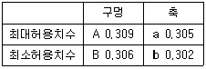
- 0.001
- 0.003
- 0.0⑤
- 0.007
(정답률: 65%)
99. 한국산업규격에서 표준서의 서식 및 작성방법(KS A 0001 : 2008) 중 틀린 것은?
- “초과” 및 “미만”은 그 앞에 있는 수치를 포함한다.
- “ 경우” 및 “때”는 한정조건을 나타내는 데 사용한다.
- “및”은 병합의 의미로 병렬하는 어구가 두 개일 때 그 접속에 사용한다.
- “보다”는 비교를 나타내는 경우에만 사용하고, 그 앞에 있는 수치 등을 포함시키지 않는다.
(정답률: 69%)
100. 제품분야 KS 표시허가를 받고자 하는 업체에서는 일반심사 기준에 대해 준비하게 되는데, 반드시 갖추어야 할 인증심사기준에 해당되지 않는 것은?
- 자재관리
- 제품관리
- 고객정보관리
- 공정·제조설비관리
(정답률: 73%)